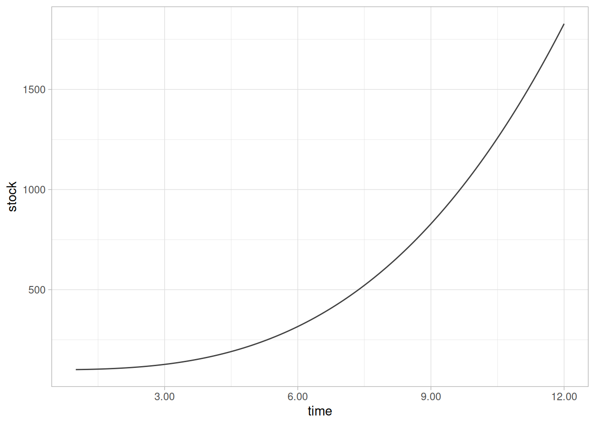
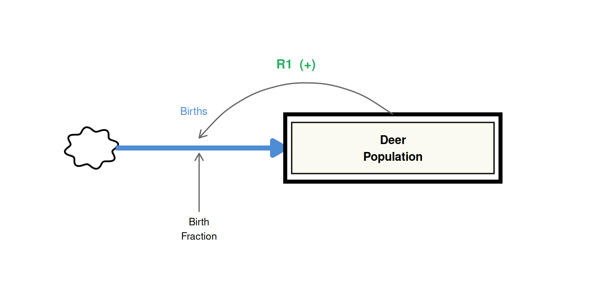
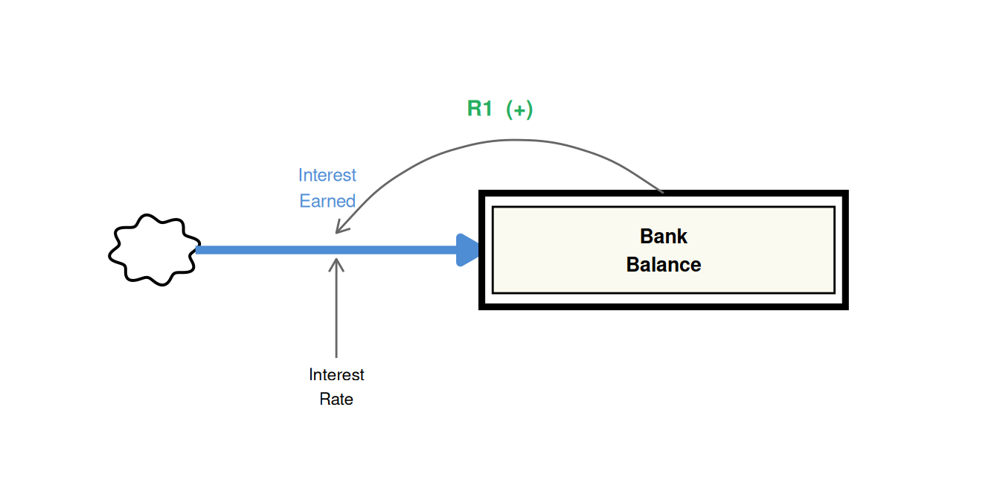
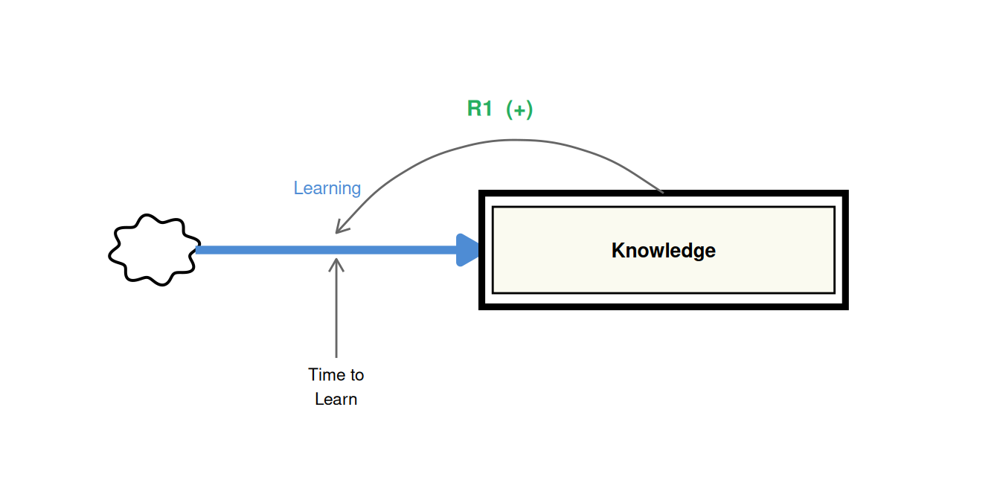
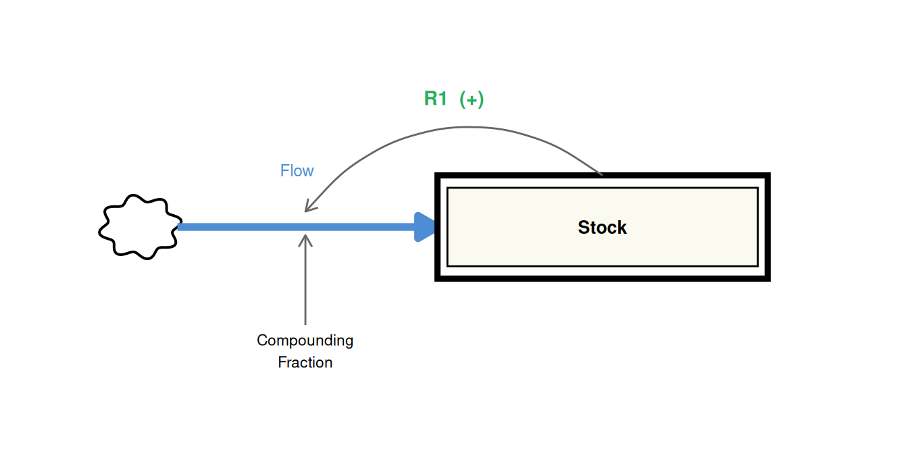
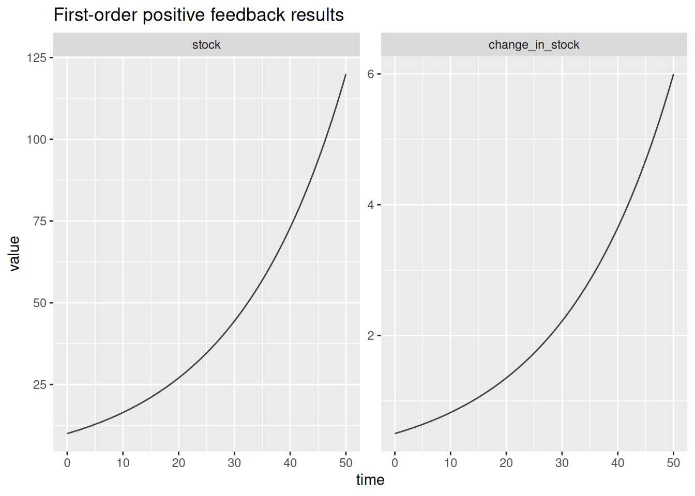
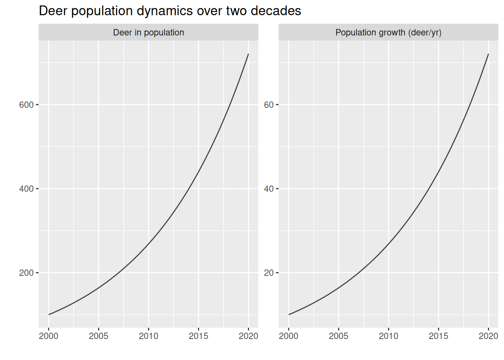

library(deSolve)
library(tidyverse)
library(lubridate)SD Tutorial 1: First-Order Positive Feedback
Data science reboot of MIT’s Road Maps, system dynamics self study
Required R packages
Acknowledgement
The core content behind this tutorial derives from the Road Maps curriculum, developed by the System Dynamics in Education Project (SDEP) at MIT under the direction of Professor Jay Forrester. I’d like to give a personal thanks to Lees Stutz of the Creative Learning Exchange (CLE) for introducing me to the Road Maps curriculum, and for supporting my own SD journey.
With the rapid growth of data science, the purpose of this tutorial is to place the power of SD in the hands of a new generation of analysts and data scientists by including supplementary tutorials and reproducible code in R. Source material for this tutorial comes from Generic Structures: First order positive feedback loops
Exponential Growth
Exponential growth is produced by a positive feedback loop between the components of a system. The characteristic behavior of exponential or compound growth is shown in Figure 1. Many systems in the world exhibit the exponential behavior of a process feeding upon itself. For example, in an ecological system, the birth of deer increases the deer population, which further increases the number of deer that are born. At your bank, your account balance is increased by the interest you earn on it, and the larger your balance gets, the more interest you earn on it! Another system which can be said to exhibit exponential growth is the knowledge-learning system. Simply stated, the more you know, the faster you learn, and then gain even more knowledge.

These very different systems exhibit the same behavior pattern because the relationship between their components is fundamentally the same. They all contain the first-order linear positive feedback generic structure. Population is related to births in the same way your bank balance is related to the interest it earns and knowledge is related to learning.
Example 1: Population-Birth system
Our first example is taken from the ecology of a deer population. The deer population is the stock, and the births of deer is the net inflow to the stock. The amount of deer births is equal to the amount of female deer that reproduce and is calculated as a compounding fraction (called birth fraction) of the total deer population.

Example 2: Bank balance-interest system
Our second example shows the relationship between a bank balance and the interest it earns. The bank balance is the stock, and the interest earned is the inflow to the stock. The amount of interest earned every year is equal to a compounding fraction (interest rate) of the bank balance.

Example 3: Knowledge-learning system
This third example is of a more abstract system. It shows that the stock of knowledge is increased by the net inflow learning. The rate of learning is the knowledge spread out over the time to learn. Therefore, learning is equal to the knowledge divided by the time to learn. The time to learn is known as the time constant of the system. Basically, the more you know, the faster you learn.

Note that in the equation of the rate, we divide the stock (knowledge) by time to learn. This is analogous to multiplying by a fraction as seen in examples 1 and 2. The units for time to learn are the units of time like weeks or months. The units of the compounding fraction would be unit/unit/time.
As is evident from the figures, all three of these systems have essentially the same structure.
R Modelling Tutorial
We will now study the generic structure of the first-order positive feedback system and then explore the possible behavior it can produce.
Generic structure

Here we have a diagram of the first-order positive generic structure. In the equation of the rate (flow), we multiply the stock by the compounding fraction or divide the stock by the time constant. The time constant is simply the reciprocal of the compounding fraction.
Functional R code
In systems modelling we always first want to understand the reference behavior of the system we are modelling. We already know we are modelling exponential growth, so we want to define the period over which the growth is occurring. Let’s start with a generic ten time units. We also want to specify the integration step, i.e. the resolution of the data we want to simulate.
# define sim time
start <- 0
finish <- 50
step <- 0.25
sim_time <- seq(from = start,
to = finish,
by = step)We now specify the parameters and initial conditions of the system. These serve as the inputs to the model. In a simple first-order positive feedback loop, we have just two parameters: the initial value of the stock and the compounding fraction.
# stocks
stocks <- c(stock = 10) # unit
# parameters
params <- c(compounding_fraction = 0.05) # (unit/unit)/timeNext we can define the model by specifying how all the variables are related. We’ll construct an first-order ordinary differential equation (ODE), but it’s far more straight forward than it sounds. Every element of the differential equation corresponds directly to the visual components of the generic structure above.
# define a function with the appropriate parameters. Include an index for the
# simulation. This will be helpful later when we want to compare the results of
# different simulations with different parameters and initial values.
system_model <- function(time,
stocks,
params,
sim = 1){
# concatenate model inputs and store as list
model_inputs <- c(stocks, params) %>%
as.list()
# create data environment so variable names can be accessed for ease of constructing the model
with(model_inputs,{
# define flow
flow <- compounding_fraction * stock # people/year
# stock differential to integrate
ds_dt <- flow
# results... when we solve this ODE below,
return(list(c(ds_dt),
change_in_stock = flow,
sim = sim))
})
}Now that we have the model defined, we can solve over the time periods specified.
# specify values for the argements in the ode solver. We use Euler's method for integration,
# which is appropriate for simple exponential growth.
sim_data <- ode(times = sim_time,
y = stocks,
parms = params,
func = system_model,
method = "euler") %>%
# keep things tidy as a tibble
as_tibble()
# check results
glimpse(sim_data)Rows: 201
Columns: 4
$ time <deSolve> 0.00, 0.25, 0.50, 0.75, 1.00, 1.25, 1.50, 1.75, 2.…
$ stock <deSolve> 10.00000, 10.12500, 10.25156, 10.37971, 10.50945, …
$ change_in_stock <deSolve> 0.5000000, 0.5062500, 0.5125781, 0.5189854, 0.5254…
$ sim <deSolve> 1, 1, 1, 1, 1, 1, 1, 1, 1, 1, 1, 1, 1, 1, 1, 1, 1,…Lastly we can plot the results. This will require a little standard cleaning and reshaping for ggplot. As we can see the from the preview of the results above, all the variable types are deSolve objects. We will have to convert to more standard types for ggplot to read, but that’s easy.
# Pivot to long format and alter variable types
d <- sim_data %>%
relocate(sim, .before = time) %>%
pivot_longer(-c(sim:time)) %>%
mutate(value = as.numeric(value),
time = as.numeric(time),
name = factor(name, levels = c("stock", "change_in_stock")))
d %>%
ggplot(aes(x = time, y = value)) +
facet_wrap(~name, scales = "free") +
geom_line(color = "grey25") +
labs(title = "First-order positive feedback results")
We can immediately see the positive feedback in the system. As the stock increases, the rate of growth increases, which further increases the stock, and further increases the rate of growth.
Generic model for specific case
We can now use our generic model to simulate specific cases. Let’s use the deer population example above.
# define sim time
start <- 2000 # year
finish <- 2020 # year
step <- 0.25
sim_time <- seq(from = start,
to = finish,
by = step)
# stocks
stocks <- c(stock = 100) # deer
# parameters
params <- c(compounding_fraction = 0.1) # (deer/deer)/year
# Solve.
sim_data <- ode(times = sim_time,
y = stocks,
parms = params,
func = system_model,
method = "euler") %>%
as_tibble()
# check results
glimpse(sim_data)Rows: 81
Columns: 4
$ time <deSolve> 2000.00, 2000.25, 2000.50, 2000.75, 2001.00, 2001.…
$ stock <deSolve> 100.0000, 102.5000, 105.0625, 107.6891, 110.3813, …
$ change_in_stock <deSolve> 10.00000, 10.25000, 10.50625, 10.76891, 11.03813, …
$ sim <deSolve> 1, 1, 1, 1, 1, 1, 1, 1, 1, 1, 1, 1, 1, 1, 1, 1, 1,…Since we didn’t bother to change anything about the model, we can now tidy up the data and change variables names for communication purposes.
# pivot and clean
d <- sim_data %>%
relocate(sim, .before = time) %>%
pivot_longer(-c(sim:time)) %>%mutate(value = as.numeric(value),
name = case_when(
name == "stock" ~ "Deer in population",
name == "change_in_stock" ~ "Population growth (deer/yr)"
),
name = factor(name, levels = c("Deer in population", "Population growth (deer/yr)")),
date = round_date(date_decimal(time), "month")) %>%
select(-time)
print(d)# A tibble: 162 × 4
sim name value date
<deSolve> <fct> <dbl> <dttm>
1 1 Deer in population 100 2000-01-01 00:00:00
2 1 Population growth (deer/yr) 10 2000-01-01 00:00:00
3 1 Deer in population 102. 2000-04-01 00:00:00
4 1 Population growth (deer/yr) 10.2 2000-04-01 00:00:00
5 1 Deer in population 105. 2000-07-01 00:00:00
6 1 Population growth (deer/yr) 10.5 2000-07-01 00:00:00
7 1 Deer in population 108. 2000-10-01 00:00:00
8 1 Population growth (deer/yr) 10.8 2000-10-01 00:00:00
9 1 Deer in population 110. 2001-01-01 00:00:00
10 1 Population growth (deer/yr) 11.0 2001-01-01 00:00:00
# ℹ 152 more rowsNotice how easily we can shape up the data for human readable results. Now plot for data presentation purposes.
#Visualise
d %>%
ggplot(aes(x = date, y = value)) +
facet_wrap(~name, scales = "free") +
geom_line(color = "grey25") +
labs(title = "Deer population dynamics over two decades",
y = "",
x = "")
Conclusion
The loop is a positive feedback loop if and only if the stock has a positive sign in the equation for net flow into the stock. A positive sign in the equation for flow gives the flow the same sign as the stock (reinforcing behavior). Therefore, the simplest positive feedback loop requires a positive compounding fraction for the inflow to the stock.